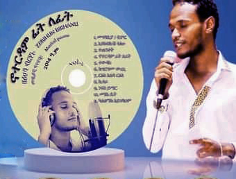

Albums
Full-length projects and collaborations, track by track.
Tap a cover to open the full tracklist.
Agul | አጉል
EP Album
Yohannes R. · 6 tracks
- 01 Muzika | ሙዚቃ
- 02 Hewane | ሄዋኔ
- 03 Agul | አጉል
- 04 Nikat | ንቃት
- 05 Yhuda | ይሁዳ
- 06 Tsega New | ፀጋ ነው

Noterdam Filfit | ኖቶርዳም ፍለፊት
Poetry Album (የግጥም አልበም)
Poet: Zerihun Birhanu · 11 tracks
- 01 Megbabiya / Dimor
- 02 Eyasebkush Salehu
- 03 Tetenkek!
- 04 Noterdam
- 05 Tewsak
- 06 Kegirgimu Wuchi
- 07 Re'is Alba Re'is
- 08 Kisara
- 09 Nebs Yimar
- 10 Mehal Bet
- 11 Kalhonk Aygebahm